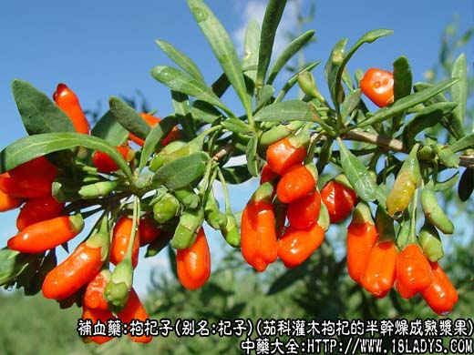
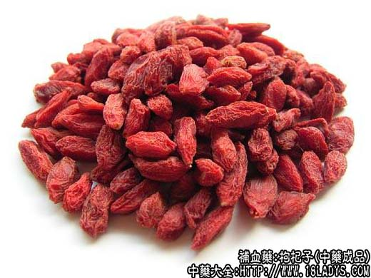
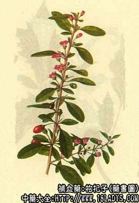

枸杞子为常用中药。始载《农神本草经》，列为上品。
别名：杞子、血杞子。
来源：为茄科植物灌木或经栽培成小乔木状中宁枸杞的半干燥成熟浆果。多为栽培。
产地：主产于宁夏自治区的中宁（宁安堡）、中卫、河北、天津、山东等地。此外甘肃、新疆、青海亦产。
性状鉴别：本品呈椭圆形或纺锤形。长0.5~2厘米，直径3~5厘米。外皮鲜红色或暗红色，具不规则的皱纹，略有光泽。一端有白色的果柄痕迹，另一端有微凸起的花柱基。肉质，柔润。内有多数黄色种子，扁平似肾形。气微，味甜。嚼之唾液染成红黄色。
以粒大、肉厚、种子少，色红，质柔润者为佳。习惯认为宁夏产品色鲜红，肉厚，子少，称“西枸杞”，质佳；河北，天津产品色血红、肉薄、子多，称“津杞”或“血杞”，质稍差。
主要成分：含甜菜硷，属生物硷。另含维生素A、B1、B2、C、钙、磷、铁等，以及色素玉米黄质。
功效与作用：补肝肾，生精血。其作用为滋养、强壮，与其所含营养物质有关。实验证明，枸杞子其有轻微的抑制脂肪在肝细胞内沉积和促进肝细胞新生的作用。
炮制：生用。
性味：甘，平。
归经：入肝、肺、肾经。
功能：补肝肾，强筋骨，润肺，明目。
主治：胆肾阳虚，腰膝酸软，虚劳咳嗽，头目眩晕，目赤生翳，消渴等症。
临床应用：为平补肝肾的常用药，不寒不热，阴虚阳虚都可用，但较多用于阴虚。
1、用于治疗肝病，包括慢性肝炎、肝硬亦而属阴虚者，取其有护肝作用，常配当归、熟地补血，沙参、麦冬滋阴，川楝子疏肝，方如一贯煎。
实验方面已初步找到了治肝病的一些根据，可作为一种中药的护肝药，常服一般无副作用，但患肝病而内火炽盛者，服杞子后有时会热象加重，为免此弊，用时宜酌加清凉药。
2、用于一般体弱肾虚，腰膝酸软，甚至遗精、带下，常配熟地、杜仲、女贞子等药；如属虚劳咳嗽。则配五味子、熟地等。
3、用于眼科，治疗目眩眼花、视力减退（如早期老年性白内障），常配菊花加强明目作用，配六味地黄汤或巴戟、肉苁蓉补肾，方如杞菊地黄汤（此方治阴虚头痛亦好）、菊睛汤。
使用注意：本品补力胜于沙苑子。虽属平补，但有内热者仍应慎用。
用量：6~12g除入汤剂外，还可以浸酒或作炖品料用。
处方举例：1、一贯煎（《柳州医话》）：北沙参9g，麦冬9g，当归9g，甘杞子9~18g，生地18~45g，川楝子4.5g，水煎服。
2、杞菊地黄汤（《医级》）：见菊花项下。
3、菊睛汤：菊花6g，杞子15g，肉苁蓉9g，巴戟6g，水煎服。
注：枸杞的商品，除正文所述的两种外，还有下列品种。
1、甘枸杞：主产于甘肃张掖（甘州），习称“甘州子”，为土库曼枸杞和包氏枸杞的果实。
其特征：粒小而圆、瘪瘦皱缩、暗红色、味甘微酸。
2、新疆枸杞：主产于新疆奇台等地，为毛蕊枸杞的果实，其形状与西枸杞相似。
3、土枸杞：全国大部分地区均有野生，为茄科植物枸杞的果实。其形状与栽培枸杞相似，唯瘪瘦、皮薄、子多、无糖质、味酸苦，质次。有些地区作“杜枸杞”或称土枸杞药用。京津两市不习销。